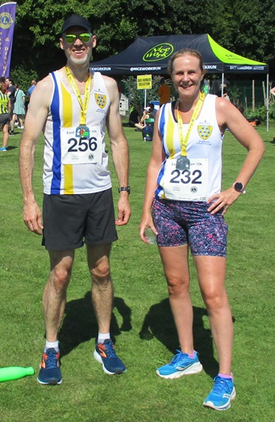
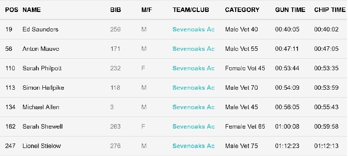

Seven SAC runners attended the East Peckham 10k on 28th July and despite searing heat and late course changes adding an extra half kilometre to the distance, there were some excellent results.
Ed Saunders led the Sevenoaks runners home in under forty minutes in 19th place, while Anton Mauve was second M55, Sarah Philpott fourth W45, Sally Shewell second W65, Simon Hallpike second M70 and Lionel Stielow 3rd M75.
The SAC results were:

The full results are here.